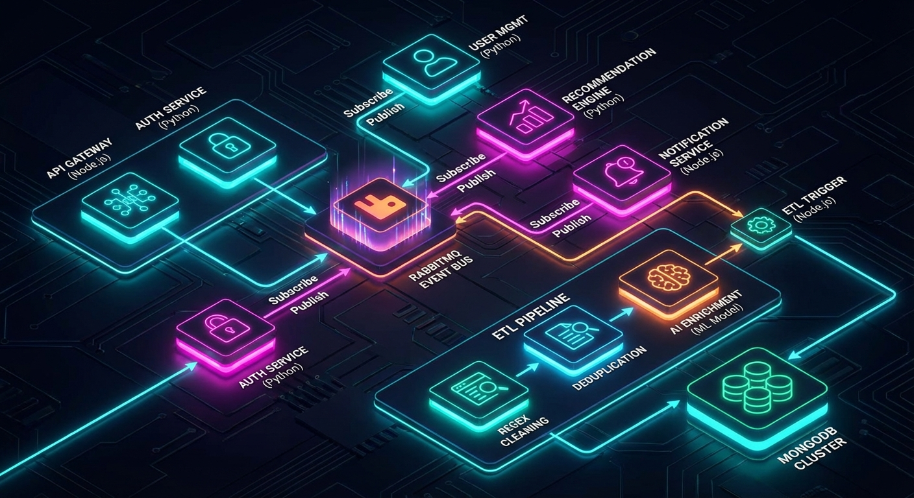
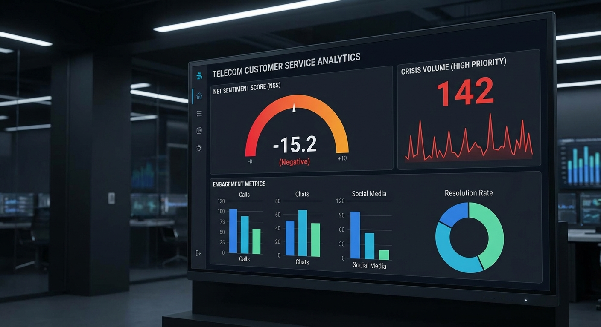
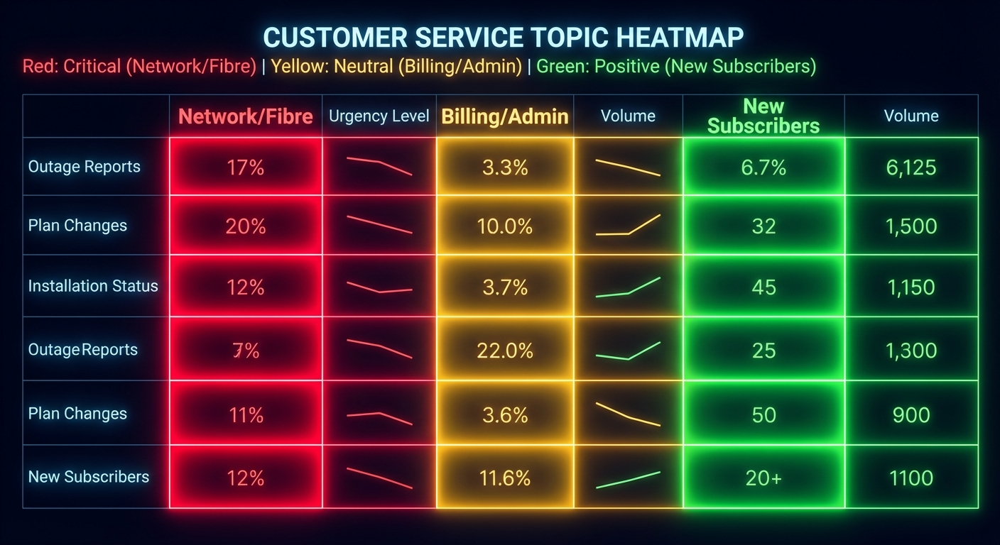
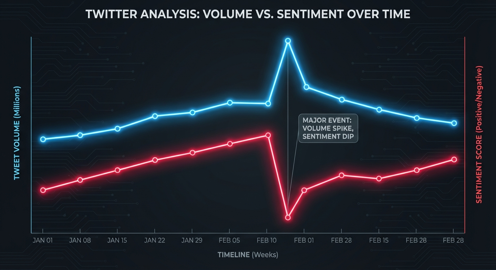
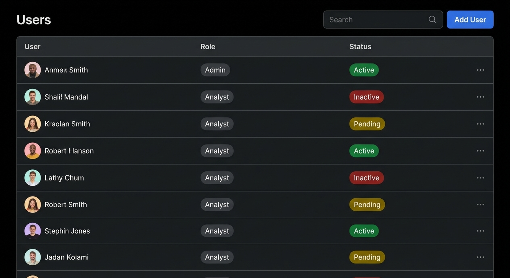

Dallosh Analysis
Analyse des Tweets SAV Free Mobile
Restitution des travaux & Perspectives Stratégiques
Bloc CC2 - Novembre 2025
Le Défi Initial
- Volume Massif : ~5000 tweets bruts/jour
- Bruit : Spam, doublons, messages non pertinents
- Objectif : Transformer la donnée brute en outil
décisionnel temps réel
La Réponse Technique

Architecture Microservices
- Orchestration : RabbitMQ (Événementiel)
- Backend : Node.js / Python
- Frontend : Next.js / React
Pipeline ETL : Nettoyage Regex → Déduplication → Enrichissement IA
Pipeline de Données
- Ingestion : Lecture des flux Twitter
- Nettoyage : Suppression émojis, masquage PII
- Déduplication : Méthode IQR (Interquartile Range)
- Enrichissement IA :
- Sentiment (Positif/Négatif)
- Priorité (0-2)
- Topic (Réseau, Facture, etc.)
Santé du SAV (KPI)

- NSS (Net Sentiment Score) : Détection des dérives
- Volume de Crise : Tweets à Priorité Haute (>1h)
- Engagement : Corrélation Négativité / Viralité
Carte de Chaleur des Incidents

Réseau / Fibre
(Critique)
Administratif
(Neutre/Négatif)
Nouveaux Abonnés
(Positif)
Anticipation des Crises

Corrélation forte : Hausse Volume + Baisse Sentiment = Panne
Nationale
Nouveaux Usages Métier
Filtrage Prioritaire
Traitement exclusif des tweets "High Priority"
Routage Intelligent
Aiguillage auto par Topic (Tech vs Commerce)
Monitoring Crise
Alerte si >30% priorité haute en 1h
Formation
Évolution des agents vers la résolution complexe
Stratégie FinOps & Infra
Approche "Modèle le moins cher suffisant"
| Priorité |
Modèle |
Coût |
Usage |
| 1 (Défaut) |
Gemini 1.5 Flash |
Très Faible |
Tri de masse |
| 2 |
Mistral Small |
Faible |
Souveraineté |
| 3 |
GPT-4o-mini |
Moyen |
Analyse complexe |
Infrastructure Hybride
Actuel
On-Premise (Bare Metal)
Coût marginal nul
Cible
Cloud Public (AWS/Azure)
Scalabilité & Load Balancing
PCA : Fallback sur GPU
internes en cas de panne API
RGPD & Souveraineté
- Zero Data Retention : Accords "Entreprise" avec
fournisseurs IA
- Anonymisation : PII Scrubbing pour API publiques
- RBAC : Gestion fine des droits d'accès

Pilotage & Configuration

Configuration dynamique des modèles et seuils d'alerte
Conclusion
Dallosh Analysis transforme le bruit en stratégie.
- Gain de productivité majeur
- Maîtrise des coûts (FinOps)
- Respect de la souveraineté des données
Merci
Projet réalisé par :
- Oumar BEN LOLO
- Gauthier
- Vincent
- Yassine
- Yacine
- Kais
dallosh-analysis.agglomy.com